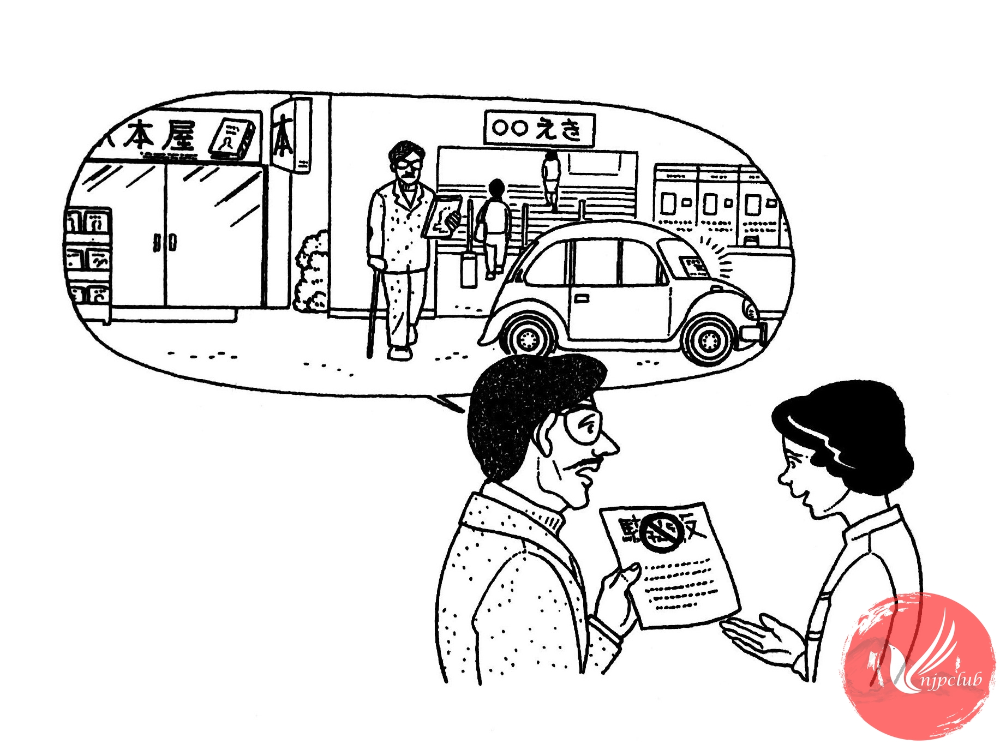

| ワット： |
すみません。わたしの 車に こんな 紙が はって あったんですが、この 漢字は 何と 読むんですか。 |
| 大学職員： |
「ちゅうしゃいはん」です。 |
| ワット： |
ちゅうしゃいはん･････、どういう 意味ですか。 |
| 大学職員： |
止めては いけない 場所に 車を 止めたと いう 意味です。 |
|
どこに 止めたんですか。 |
|
| ワット： |
駅の 前です。雑誌を 買いに 行って、10分だけ･････。 |
| 大学職員： |
駅の 前だったら、10分でも だめですよ。 |
| ワット： |
そうですか。罰金は 払わなければ なりませんか。 |
| 大学職員： |
ええ、15,000円 払わないと いけません。 |
| ワット： |
えっ。15,000円ですか。 |
|
雑誌は 300円だったんですけど･････。 |